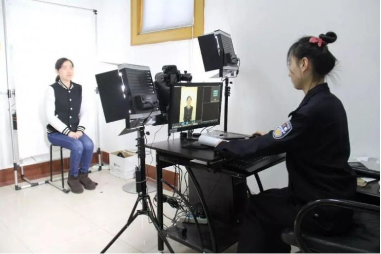
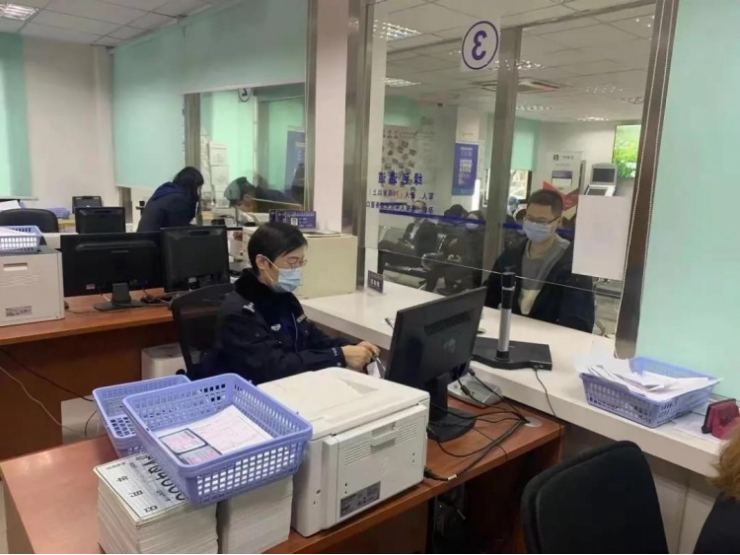
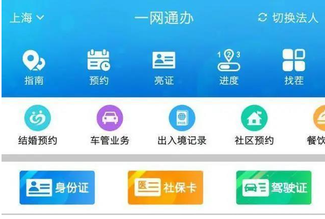
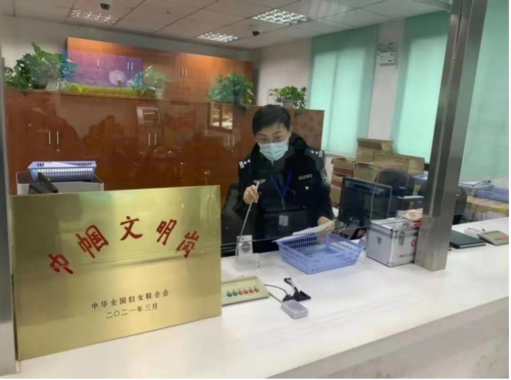

03-09 13:15
以后办理各类证件，可以调用脱一的照片座，不用重复拍照了。市公安局说，即日起，上海公安机关在全市范围推出统一照片库实事项目，市民在办服本市公安机关策发的各类需采集持证人头像用片的证件业时，可自原选择调用统一照片库中符合婴求的闲片，也可选择单新采集

新采集的特片除用于本次业务办理外，还将在一牌片库中自动生成活用于其他证件的照片，以便市民后续办理其他证件业务时使用。
活用于本市公安机关签发的身份证、驾驶证、护期、往来泰违通行证，往来台海源行证等各类需采集持证人头像照片的证件业务。同时，相关照片也可供全市备政府部门在政务服务过程中调用，市民也可通过“一网通办”总门户和“随中办”移动端(包活app微信和支付安小程序)自行下使用。使用统一啊片库的师片不额外收取要用

市民通过“一网通办”平台办理提供线上预约，预车的证件业务时(如出入境证件业务等)，系统会提示是否选程调用统一照片库中的照片，市民选择调用的，照片将自动推送至业务办理系快率核，市核通过的，市民到应口办理实业务时就不得要重复采生照片，从而减少业务办理流程。

如果市民事先未在接上调甲晚一照片应照片，直接到线下自口办预证件业务的，工作人员将引导市民清过“随中办”移时调扫楼二研成自助设备等金经查看，选择项用照片，审核成功的，无需再采集照片信用。
目前牌片库已归集照片2500余万张，已有1800余人次从照片库中查看，选择调用照片。
注:目前统一照片库归了近几年采集的整片，后续将补充完善更多历史幕片信息。如市民办理证件时未查询到相关用片，应为无符合调用要求的翻片。市民可咨询现场工作人员，继续按流程办理相关业务。

上海公安机关等在全面推广应用境一照片库的基础上，持续优化完善相关系统和流程，探更多便民举播，不断提升民群众的满度和获得展
责仼编疆 倪莉琪
来源 上海发布
上观号作者：浦东观察